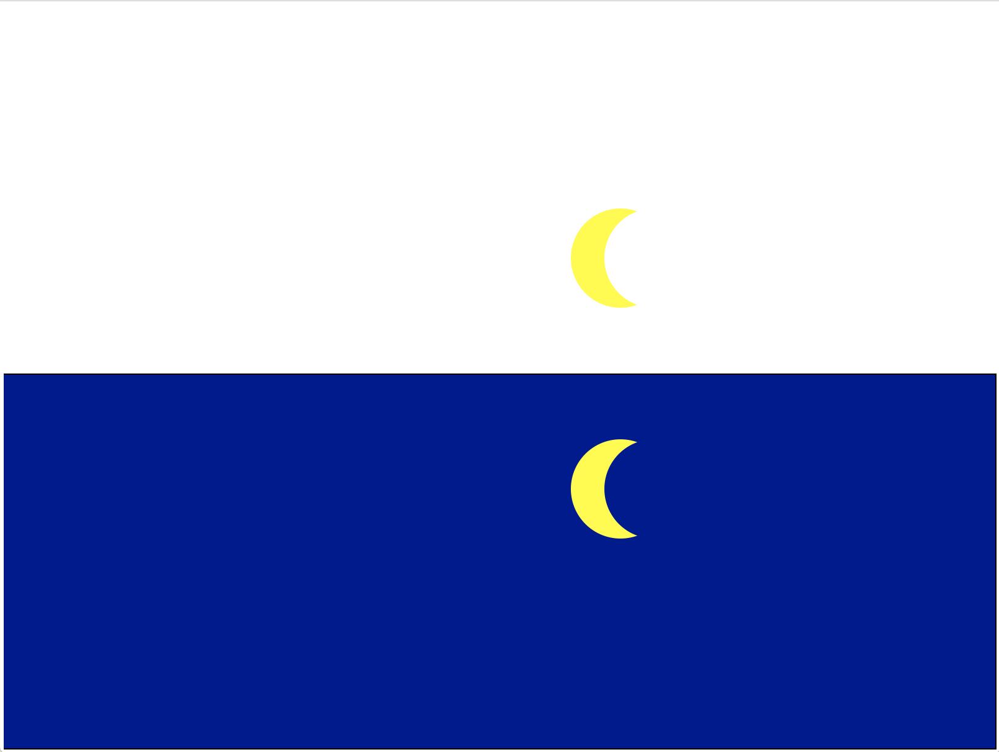
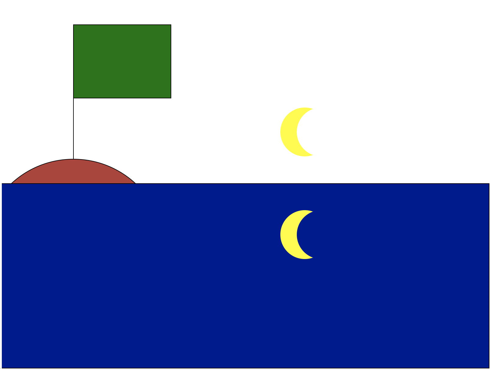
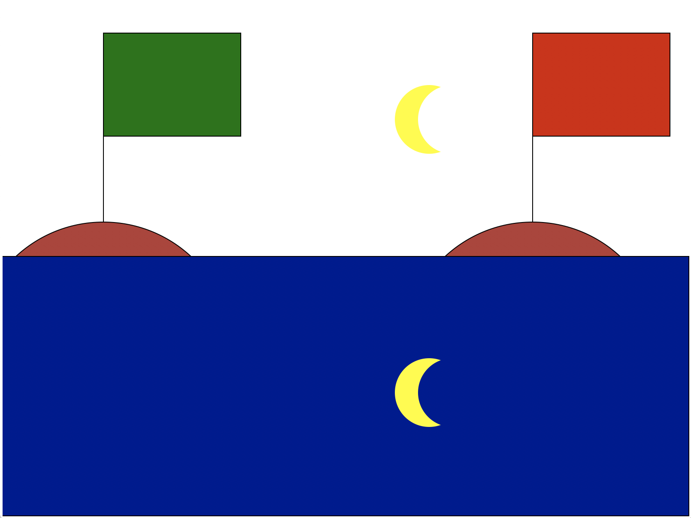
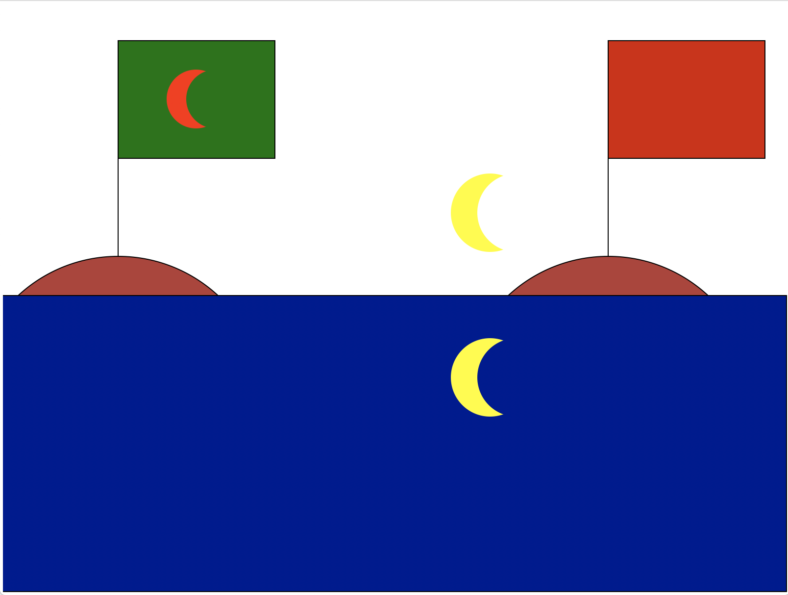
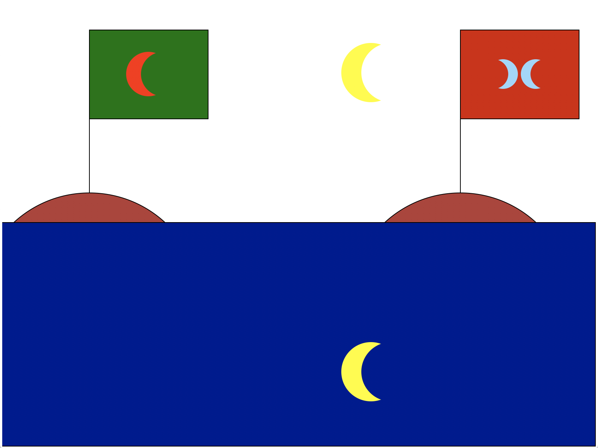
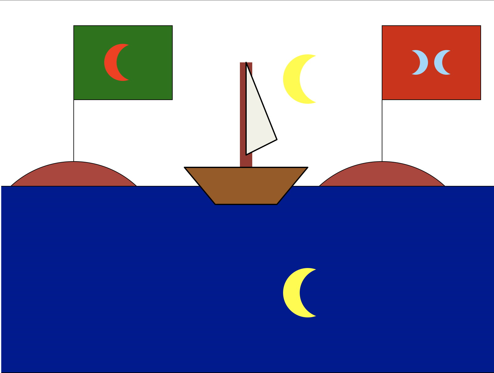
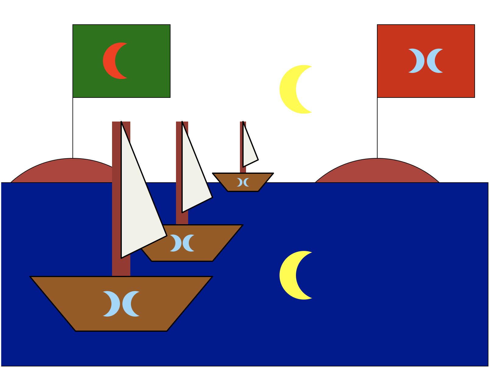
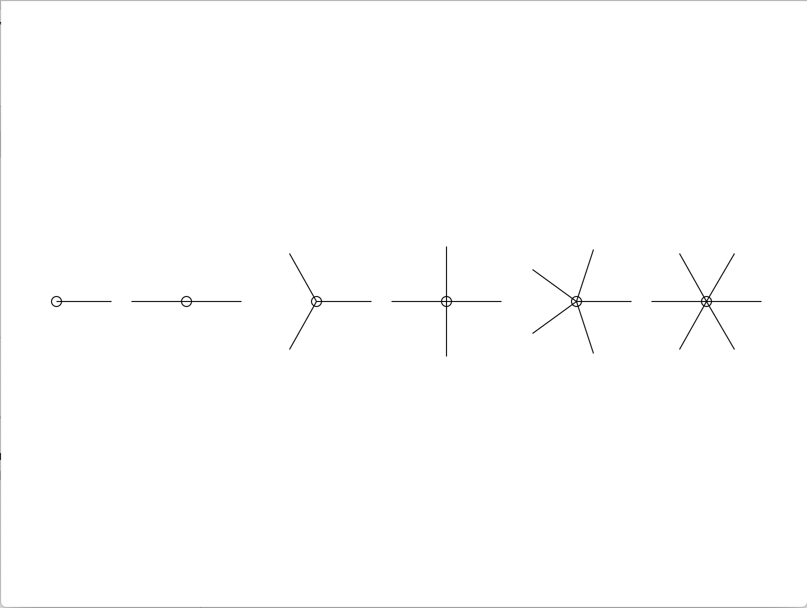
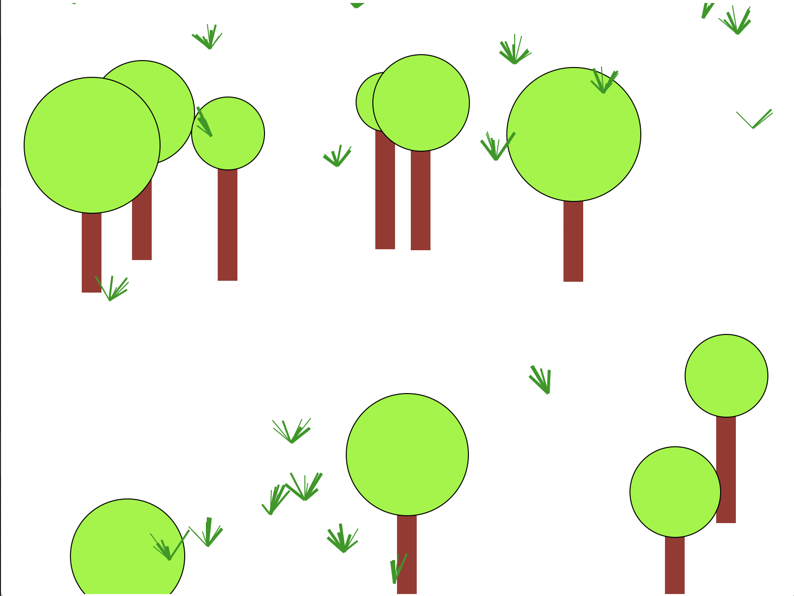

Programovanie v pythone - funkcie
GAMČA | Kvinta
2. 10. 2019
-
Nakresli obrázok mesiac a more:

-
Zadefinuj si na to funkciu so vstupnými parametrami:
def mesiac(x, y, pozadie='white'):
...
-
Mesiac nech sa nakreslí vždy v náhodnej výške nad
hladinou, ale nie nalepený na hladinu, ani na horný okraj obrázka
(estetický padding je ľubovoľný, niečo rozumné)
-
Odraz mesiaca na hladine korešponduje s výškou mesiaca na oblohe
-
Do obrázku dokresli vlajku:

-
Do obrázku dokresli ďalšiu vlajku:

-
Pravdepodobne je rozumné kreslenie vlajky extrahovať do funkcie:
def vlajka(x, y, farba='darkgreen'):
...
-
Na zelenú vlajku dokresli červený mesiac:

-
Mesiac na vlajke nech má inú farbu ako mesiac na
oblohe
-
Mesiac na vlajke nech má inú veľkosť ako mesiac
na oblohe
-
Pravdepodobne je rozumné upraviť funkciu mesiac a jej vstupné
parametre:
def mesiac(x, y, r=50, farba='yellow', pozadie='white'):
...
-
Na červenú vlajku dokresli logo - dvojitý mesiac:

- Logo nech má nastaviteľnú farbu
- Logo nech má nastaviteľnú veľkosť
-
Pravdepodobne je rozumné využiť už hotovú funkciu mesiac na
inšpiráciu a zadefinovať ďalšiu veľmi podobnú funkciu
mesiac_obrateny
def mesiac_obrateny(x, y, r=50, farba='yellow',
pozadie='white'):
...
-
Funkcie mesiac a mesiac_obrateny ďalej použi vo funkcií logo:
def logo(x, y, r=50, farba='light sky blue', pozadie='saddle
brown'):
mesiac(...)
mesiac_obrateny(...)
-
Do obrázku dokresli loďku:

-
Nakresli námornú flotilu:
-
Kreslenie loďky extrahuj do funkcie:
def lodka(x, y, velkost):
...
-
Parameter velkost škáluje všetky rozmery v loďke
(napr. aj hrúbku stožiara)
-
počet lodiek (minimálne 3) aj rozostupy sú voliteľné, avšak
(povinne) loďky treba nakresliť pomocou
for cyklu
-
Na loďky dokresli logo - dvojitý mesiac:

-
Uprav funkciu lodka, v jej tele zavolaj funkciu logo s vhodnými
parametrami:
def lodka(x, y, velkost):
...
logo(...)
-
Nakresli obrázok n-uholníkové kvety:

-
Zadefinuj funkciu n_kvet so vstupnými parametrami:
def n_kvet(x, y, n=3, r=50):
...
-
Pomocou for cyklu nakresli kvety do radu:
for n in range(1, 7):
n_kvet(...)
-
Nakresli obrázok les:

V lese sa nachádza:
-
10 stromov
- Strom má náhodne veľkú korunu
-
20 tráv
- Tráva má náhodný počet listov (napr. 3 až 10)
-
Listy rastú v nejakom náhodnom rozptyle od korena v x-ovom aj
y-ovom smere
- Listy majú náhodnú hrúbku (napr. 1 až 3)
-
Všetky stromy aj trávy sú na náhodnej pozícií, vybehnutie z okna
tento raz netreba nejak extra kontrolovať
- Kód rozdeľ rozumne podľa vlastného uváženia do funkcií